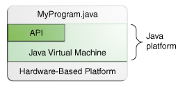

系列之Java Tutorials学习(一)
更新日期:
基于Java官方指导文档，开展学习
Java是什么
Java 是编程语言，也是一个平台
特性
简单 可移植 面向对象 分布式运算
高性能 健壮 安全 动态 体系结构中立
记忆宫殿：
恋爱是件简单的事，但放到社会体系中（中立体系结构），也就复杂起来
对象异地分布，
移情别恋（可移植）也不奇怪，
要留住恋人，性能力是一方面，
另外，健壮的身材，强大的安全感，也不可或缺
编译与运行

如此，通过 JVM，Java 程序能跨平台运行

附：部分虚拟机，检查性能瓶颈或将频繁使用的代码域转为本地代码，来提高性能，如 Java SE HotSpot at a Glance
Java 平台本质
平台，是程序在其中运行的硬/软件环境
多数平台 = 操作系统 + 底层硬件
Java 平台是纯软件平台，运行在其他基于硬件的平台上
Java 平台 = JVM + API
API 是现有软件元素的集合，能提供许多有用的特性
API被划分为多个相关类和接口的库
这些库，就是包

Java 独立于平台
作为平台独立的环境， Java平台会比本地代码稍慢
但编译和虚拟机技术可以降低这种影响
Java可以做什么
开发工具
涉及编译(javac)，运行(java)，监视，调试和文档生成(javadoc)编程接口 API
提供 Java 编程语言的核心功能部署
JDK 按标准机制，将应用展现给终端用户
如：ava Web Start 和 Java Plug-In用户接口工具集
借助 JavaFX，Swing 和 Java 2D，Java 能够创建复杂的图形用户接口集成库
通过Java RMI-IIOP Technology协议，集成库，如 Java IDL API， JDBC API， JNDI API， Java RMI， Java Remote Method Invocation，能够访问数据库，并操纵远程对象
Java 带来的益处
快速上手
面向对象，尤其适合已学过C和C++的程序员代码量更小
少量代码即可实现其他语言大量代码的功能代码更优秀
Java鼓励优良的编程实践，另外，Java垃圾回收机制能避免内存泄露
同时，可复用其他代码，但仅带来少量bug加快开发
避免对平台的依赖
一次编写，处处运行
更简单的软件分发